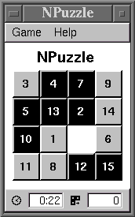

By Johannes Lehtinen < johannes.lehtinen@iki.fi >
This page includes information about my spare time software projects targeted to Agenda VR3 platform. Although I am currently working alone on these projects, all kind of contributions (ideas, suggestions, bug reports, new source code, hardware... ;) are welcome.
Projects described here include: NPuzzle, Reversi, VRFig
NPuzzle is a simple implementation of 15-puzzle (or 8-puzzle or 24-puzzle) and I wrote it mostly to learn how to work with FLTK user interface library. NPuzzle has been tested on Agenda VR3 and I tried to give it the VR3 look and feel. The development was done in an ordinary Linux/X environment and the VR3 port was done simply by cross compiling the program for MIPS. NPuzzle is distributed under the GNU General Public License.
To compile the source code distribution on standard Linux box, you must have the following installed. For help on compiling the native VR3 binary, see the end of INSTALL file in the source package.
Use one of the links below to download a source code or binary distribution.
npuzzle-0.2.1.tar.gz (46.2 kB)
npuzzle-0.2.1.vrp (20.0 kB)
npuzzle-0.2.1 for Agenda VR3 (29.6 kB)
You need only the npuzzle binary to run the
game. Just copy the binary to suitable place on a flash disk (using
rsync, for example) and make a symbolic link
/home/default/.wmx/Games/NPuzzle pointing to the
binary. Remember to make sure that the downloaded binary has execute
permissions (chmod a+rx npuzzle).
Reversi is the second one of my FLTK experiments. My idea was to build couple of simple games to learn how to use FLTK toolkit. Reversi is not yet fully functional. I am also planning to add IrDA support for two player game if possible. Currently the Reversi development is frozen and I am concentrating on VRFig. Check this page later for more information.
VRFig is a simple tool for drawing figures. It has been developed for PDA use and especially for the Agenda Computing VR3 Linux PDA. The goal is to be able to plan things and sketch technical drawings on the road without always dragging a laptop computer around. The intended ultimate use could be sketching or browsing a software architecture diagram while sitting in a bus, for example.
To find more information about the VRFig, go here.
Copyright (C) 2000 Johannes Lehtinen
Version: $Id: index.html,v 1.3 2001-05-28 16:02:44 jle Exp $